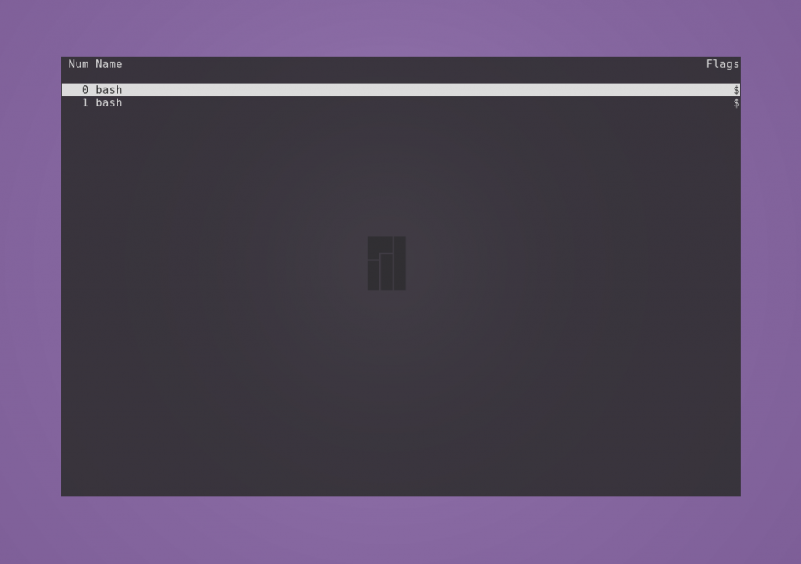

Команда screen Linux
Команды Обновлено: 13 апреля, 2020 5 Geradot
Эффективность администрирования систем GNU/Linux напрямую зависит от используемых утилит. Возможность выполнять максимум задач в минимальный срок - приоритетная цель этого процесса. Команда screen Linux является одним из основных инструментов системного администратора.
По умолчанию screen не является стандартной утилитой в большинстве дистрибутивов, но работает везде одинаково. Поэтому сначала рассмотрим её инсталляцию, а затем — возможности и основные команды.
Разница в инсталляции программы на разных дистрибутивах заключается в программах управления пакетами и их командами.
Чтобы установить screen в Ubuntu, Linux Mint, Deepin и других систем семейства Debian, используйте команду apt:
sudo apt install screen
В Manjaro, Antergos и других Arch-подобных ОС screen располагается в AUR, поэтому используйте соответствующую программу управления пакетами, например aurman:
aurman -S screen
Для инсталляции screen в системах на основе Red Hat (например Fedora и CentOS) используйте утилиту dnf:
dnf install screen
Принцип работы GNU/Linux в целом заключается в использовании небольших утилит, которые делают что-то одно, но хорошо. И эта программа — не исключение.
Команда screen Linux является консольной программой и имеет однозначное определение, соответствующее названию, — это оконный менеджер, разделяющий один физический терминал между несколькими процессами. Подходит для прямого либо удалённого администрирования.
Screen позволяет переключаться между терминалами, в которых выполняются процессы, не прерывая их. Это особенно эффективно, когда необходимо производить сборку/установку ПО и мониторить дисковое пространство или использовать аппаратные ресурсы.
Screen может разделять текущий терминал на меньшее количество окон с возможностью запуска в них того же или других терминалов. Это ещё больше упрощает вышеописанную задачу, особенно при использовании больших мониторов.
Также к одной сессии screen может подключаться несколько пользователей. Это эффективно при обучении персонала.
Откройте терминал. Для запуска первого окна наберите:--
screen
Создастся новая сессия программы и появится приветственное сообщение. Для его закрытия нужно нажать Space или Enter.
Все управляющие команды начинаются с комбинации клавиш Ctrl + a, затем следует буква или сочетание клавиш. Буквы разных регистров выполняют разные команды. Также сочетания можно заменять текстом. Для его ввода нажмите Ctrl + a и :, после чего вводите текст.
Например, чтобы создать новое окно, нажмите по очереди сочетание Ctrl + a и затем c. Для просмотра списка созданных окон нажмите Ctrl + a и w.
Для перехода в любое из созданных окон сессии используется комбинация Ctrl + a и номер, который за ним закреплён, или Ctrl + a и ", после чего нужно выбрать стрелками необходимое. Для последовательного перехода используйте Ctrl + a и n (следующее окно) или p (предыдущее окно).

Чтобы разделить экран по горизонтали, нажмите Ctrl + a и S. Например, для разделения окна по горизонтали напишите split.
Будет создано новое окно снизу от текущего, и оно не становится активным. Чтобы разделить по вертикали, нажмите Ctrl + a и | (или введите split -v).
Были созданы новые пустые окна. Для переключения между ними используйте Ctrl + a и Tab (или напишите focus). Положение курсора указывает, какое окно является активным в данный момент. Для скрытия окна используйте Ctrl + a и X (или введите remove).
Чтобы запустить в новом окне терминал, нажмите Ctr + a и c (или наберите screen).
Чтобы скрыть все окна и оставить только текущее, используйте Ctrl + a и Q (или напишите only).
Переименовать окно можно с помощью Ctrl + a и A. Внизу появится строка с возможностью заменить старое название.
Чтобы скрыть все окна сессии, нажмите Ctrl + a и \. Подтвердите решение нажатием y. Для выхода из менеджера окон нажмите Ctrl + a и d.
Команда screen обладает большим набором горячих клавиш. Полный их список можно посмотреть с помощью Ctrl + a и ?.
При создании новой сессии screen можно задать ей имя. Таким образом можно создать несколько сессий. Чтобы сделать это, используйте параметр -S, после которого укажите название.
screen -S name-of-screen
Посмотреть список запущенных сессий можно командой
screen -ls
Строка, идентифицирующая сессию, состоит из нескольких полей: id, название и статус.
Значение id отображается в списке всех запущенных процессов. Это означает, что его можно завершить с помощью команды kill. Завершить работу текущего окна можно с помощью комбинации Ctrl+a и k; подтвердите решение нажатием y.
Статус может иметь два состояния: Attached (задействован) и Detached (незадействован). Второе состояние у сессий, в которых ещё не происходили никакие процессы.
Чтобы перейти в нужную сессию, следует указать параметру -r её id или название.
screen -r 23505
Это всё основные команды screen Linux.
Теперь давайте рассмотрим, как пользоваться screen Linux более подробно.
Пример 1. Необходимо отслеживать изменения файла в реальном времени. Для этого в одном окне будем вносить изменения в новый файл, а в другом — отображать файл командой tail с опцией -f:
При стирании содержимого показывается сообщение, что файл усечён, при этом этот текст в него, конечно, не записывается.
Пример 2. Необходимо отслеживать размер каталога в реальном времени. В одном окне записываем данные, в другом — отображаем, как изменяется размер домашнего каталога командой watch с задержкой в две секунды.
Команда screen является эффективным инструментом для системного администрирования, особенно при работе с системой без среды рабочего стола. Имея один терминал, вы можете создавать несколько окон для обработки параллельных процессов без конфликтов между ними.